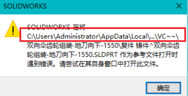
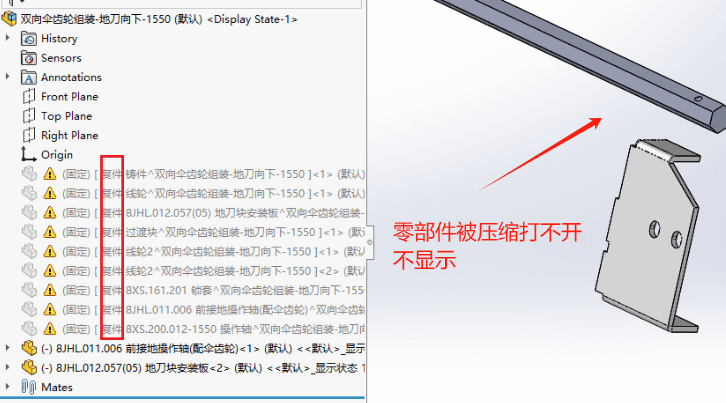
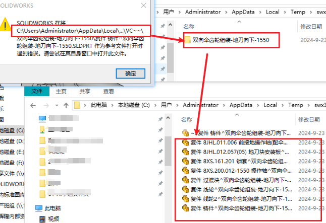
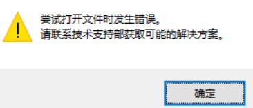
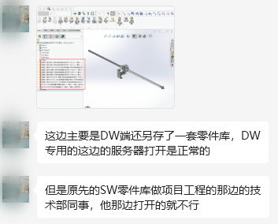
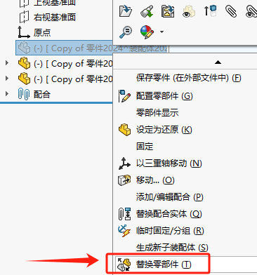
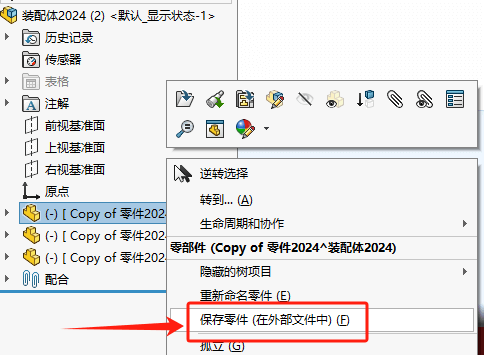

虚拟件打不开
 情况1
按提示的问题虚拟机路径查找，能发现文件，
但是打开会是报错，大概率还是因为文件被加密或损坏影响了。
情况2
在不同服务器网络下的装配体文件打开，其虚拟件打开正常。
在不同客户端电脑下打开该文件后，虚拟件就打不开，是压缩状态。并且是会报错
参考方法1
从文件损坏角度看，我建议的最快处理方法是：将异常零部件删除（或替换零部件）方式，将外部文件夹的正常零件插入到装配体内。
参考方法2
如果是文件加密，在C盘不能使用，则建议是不使用虚拟件模式，而是将其另存为【外部文件】的零件
